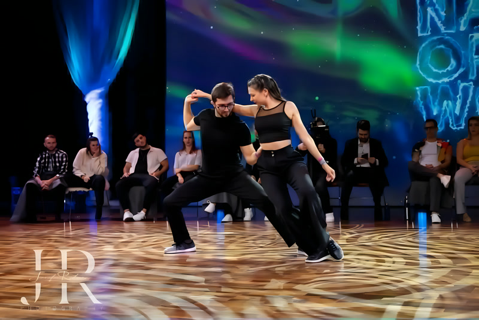
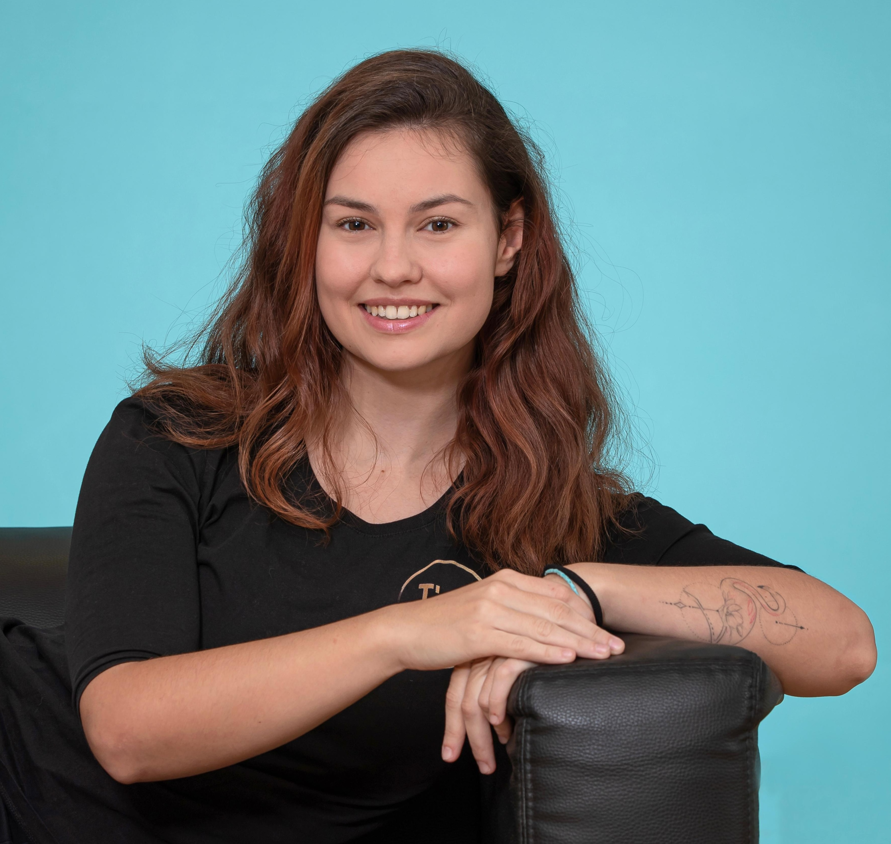

Staff

Raphael & Kaja
Raphael comes from Paris and Kaja from Poland. With a background in martial arts, Raphael brings a unique sense of style and body awareness to his dancing. His passion for pedagogy and biomechanics means he always finds the right words to break things down, and the fact that he teaches as both leader and follower gives him a deep understanding of both sides of the dance. Kaja's diverse dance background spans various solo and partner dances, giving her a rich movement vocabulary and deep technical knowledge (with seriously impressive turns), sharpened by years on the competition floor. What they share is a deep love for musicality and creativity, and their classes are always full of good vibes.

Joscha & Christina
Joscha and Christina are both from Germany. Both are trained dance teachers (ADTV) — Joscha has been dancing all his life and discovered West Coast Swing in 2019 — and never looked back. His style is refreshing and full of good energy, and that carries right into his teaching. Christina is all about connection and paying attention to the little things that make partner dancing feel right. Together, their classes are fun, clear, and always a good time.

Vanessa & Thomas
Vanessa started as a competitive hip-hop dancer before discovering West Coast Swing in 2017. She's a certified swing dance teacher trained through the Hep Cat Club and teaches weekly in Munich as well as workshops worldwide. As a Health & Wellness Coach, her teaching is grounded in body awareness, making her explanations precise and easy to follow. Thomas has been dancing swing since his youth and teaching it since 2005 — internationally since 2009. His path took him through Boogie, Lindy Hop, Balboa, and Ballet before landing on WCS. He runs the Hep Cat Club in Augsburg & Munich, and his deep knowledge of swing history and technique shines through in everything he teaches. At CozySwing, Vanessa will be leading the seminar "From Dance Goals to Action!"